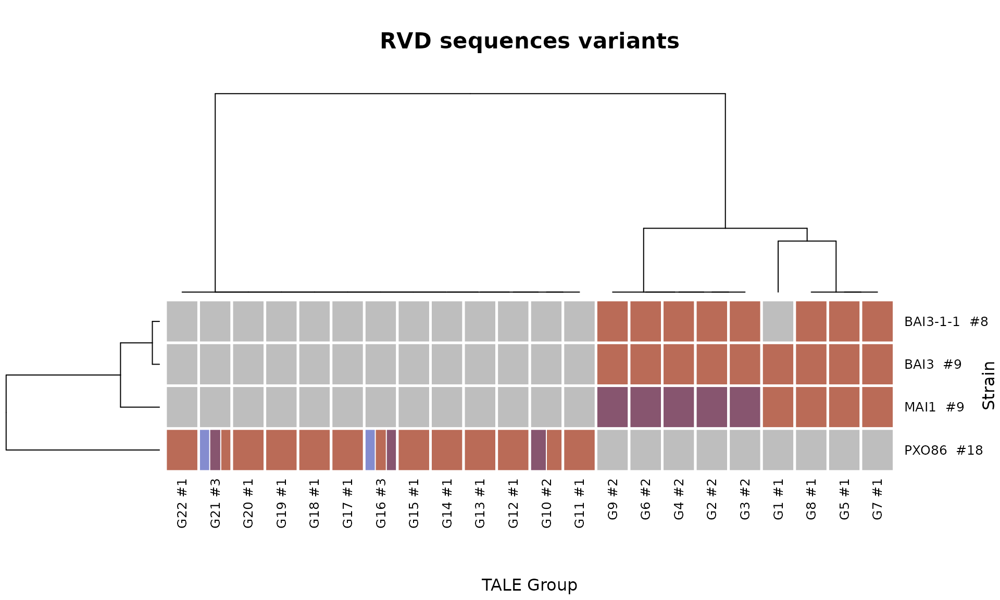

3. Multiple alignment of TALE sequences with tantale
Source:vignettes/3_tale_msa.Rmd
3_tale_msa.Rmd
library(tantale)
library(ggplot2)
library(tidyverse)
library(Biostrings)
library(parallel)
library(magrittr)
library(DT)
library(gplots)
library(ape)
library(ggtree)
library(corrr)
library(ggcorrplot)When investigating large sets of TALEs with groups composed of several members, it is often quite informative to observe a multiple alignment of the ‘parts’ of the TALEs belonging to groups of interest.
The TALE Class Assignment tool of AnnoTALE performs this task but one drawback is that it is unable to insert gaps in the alignements. New TALEs often evolve by DNA recombination creating large deletion and insertions in the Central Repeat Domain of the protein. It is therefore very powerful to be able to detect inDels because they may be the sign of common descent (see also the article on the QueTal suite).
Under the hood, the buildRepeatMsa function leverages
the capacity of MAFFT to align
arbitrary characters in hexadecimal code to generate TALE parts
sequences multiple alignments as illustrated here.
outdir <- fs::dir_create("~/TEMP/test_tantale") # tempdir(check = TRUE)
load(file.path(outdir, "mining.RData"))TALE domains multiple alignments with similarity
If interested in performing TALEs multiple alignments (distal domains
or RVDs) it makes sense to align TALEs that are related and that thus
belong to the same group. This is what we are doing here but keep in
mind that the buildRepeatMsa() function can take any
arbitrary set of repeatID sequences or RVD sequences.
But right now what we need is a mapping between distal parts IDs and the cognate RVDs. This can be done in a number of ways but let’s use the one below.
rvdSeqs_fasta <- list.files(telltale_outdir, "rvdSequences.fas", recursive = T, full.names = T)
telltale_rvd <- file.path(distal_telltale, "rvd.fasta")
unlink(telltale_rvd)
# rename of RVD sequences to distinguish sequences between different strains
for (input in rvdSeqs_fasta) {
id <- gsub("\\_.+", "", basename(dirname(input)))
seqs <- readBStringSet(input, seek.first.rec = T)
names(seqs) <- paste0(id, "_", names(seqs))
names(seqs) <- stringr::str_trim(names(seqs))
seqs <- seqs[width(seqs) != 0]
writeXStringSet(seqs, telltale_rvd, append = T)
}
rvdVectors <- toListOfSplitedStr(telltale_rvd, sep = "-")
repeatVectors <- toListOfSplitedStr(distalr_deci_output$coded.repeats.str, sep = " ")
# map repeatID to RVD
rep2rvd <- getRepeat2RvdMapping(talesRepeatVectors = repeatVectors, talesRvdVectors = rvdVectors)
datatable(rep2rvd, options = list(pageLength = 5))Performing MSA using repeat strings
If possible it is more appropriate to align repeat/domains rather
than RVD. For mafft (the underlying aligner), in our hands, the combo of
gap opening score = 0 (--op 0) and gap extending score = 5
(--ep 5) (the current default values) yields better
alignments.
repeatVectors <- distalr_deci_output$coded.repeats.str
repeatSim <- distalr_deci_output$repeat.similarity #distal_output$repeat.similarity
lapply(sort(unique(taleGroups$group)), function(G) {repeatVectors[taleGroups$name[taleGroups$group == G]]})
repeatMsaByGroup_withSim <- lapply(sort(unique(taleGroups$group)), function(G) {
try({buildRepeatMsa(inputSeqs = repeatVectors[taleGroups$name[taleGroups$group == G]],
sep = " ",
distalRepeatSims = repeatSim,
mafftOpts = "--globalpair --weighti 1 --maxiterate 1000 --quiet --reorder --op 0 --ep 5 --thread 1")
})
}
)Plotting MSA with RVDs as text and coloring based on repeat similarity
For this type of plot, we need to map repeatID to RVD with
getRepeat2RvdMapping(), then convert repeat MSA to RVD MSA
by convertRepeat2RvdAlign. We should use the converting
function rather than using buildRepeatMsa() to creat MSA of
RVD because there will be disagreement between them.
# convert repeat MSA to RVD MSA
repeatMSA <- repeatMsaByGroup_withSim[[2]]
rvdMSA <- convertRepeat2RvdAlign(repeatAlign = repeatMSA, repeat2RvdMapping = rep2rvd)
# plot MSA
tantale::heatmap_msa(talsim = distalr_deci_output$tal.similarity,
repeatAlign = repeatMSA,
repeatSim = distalr_deci_output$repeat.similarity,
rvdAlign = rvdMSA,
plot.type = "repeat.similarity",
main = "Repeat MSA with similarity - Group 2")Plotting MSA with repeat Ids as text and coloring based on repeat clustering
tantale::heatmap_msa(talsim = distalr_deci_output$tal.similarity,
repeatAlign = repeatMSA,
repeatSim = distalr_deci_output$repeat.similarity,
plot.type = "repeat.clusters",
main = "Repeat Cluster MSA - Group 2")Plotting MSA with RVD as text and coloring based on repeat clustering
For this plot, we also use the RVD MSA converted from repeat MSA.
tantale::heatmap_msa(talsim = distalr_deci_output$tal.similarity,
repeatAlign = repeatMSA,
repeatSim = distalr_deci_output$repeat.similarity,
rvdAlign = rvdMSA,
plot.type = "repeat.clusters.with.rvd",
main = "Repeat Cluster MSA with RVD - Group 2",
consensusSeq = TRUE)Generate an overview of talomes
With the TALE classification result and RVD sequences, we can represent RVD sequence variants of all the strains for each TALE group as an example below.
tale_annotation <- merge(taleGroups,
data.frame("name" = names(rvdVectors),
"rvdseq" = sapply(rvdVectors,
function(i) paste(i, collapse = "-")
), stringsAsFactors = FALSE
)
)
tale_annotation$strain <- gsub("\\_.+", "", tale_annotation$name)
heatmap_talomes(tale_annotation,
col = "group", row = "strain",
value = "rvdseq",
mapcol = sunset10)
save.image(file.path(outdir, "mining.RData"))